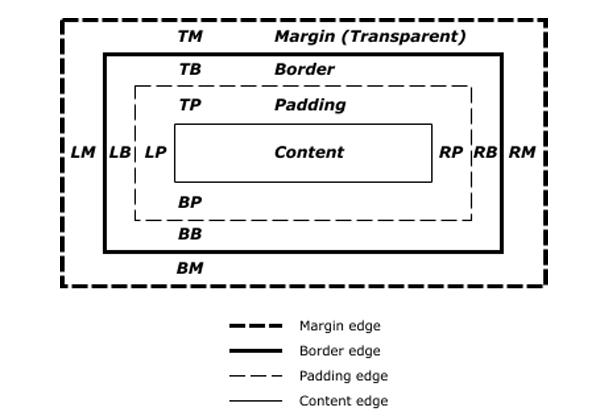
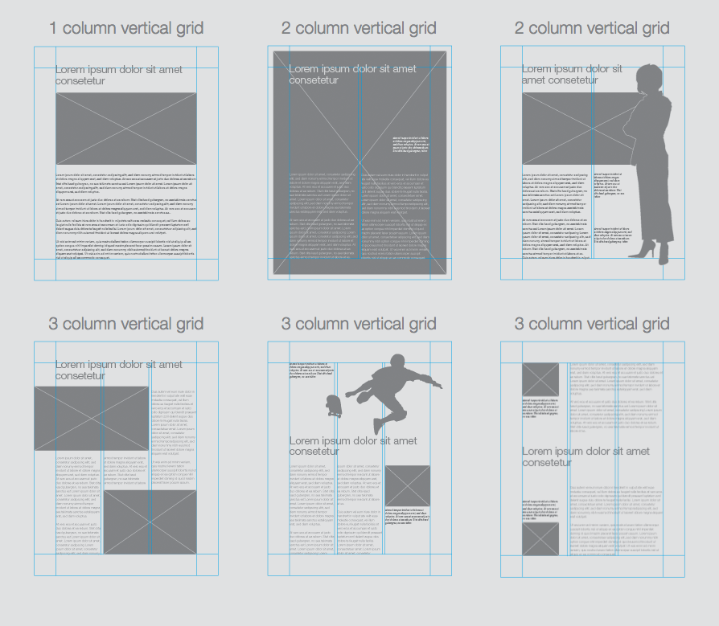

CSS - Cascade Style Sheet
Intro to CSS
CSS stands for Cascading Style Sheets and it's a language used to describe the presentation of a document written in HTML
CSS describes how elements should be rendered on screen, on paper, in speech, or on other media types
CSS code example:
span {color: white;}In this example we define that all span elements will show white text
Using this code we can see that with CSS we'll select one or many elements & set some property and value to update the way the element should look
CSS code example:
element_selector {property_name: property_value;}By working with CSS we'll be selecting elements and defining how they should look
We can also define if the style should be applied at the element, document or site level
Chrome Devtools is a great tool to use when coding CSS and JavaScript
Element Type selectors
The type selector matches elements by node name
It selects all elements of the given type within a document
Between { } goes CSS code
Selector Example
/* This selector selects all p elements */p {/* CSS Code */}/* This selector selects all div elements */div {/* CSS Code */}/* This selector selects all span elements */span {/* CSS Code */}
Color
The color CSS property sets the foreground color value of an element's text content and text decorations
This property accepts any CSS color value:
- Named color: white, red, blue, green
- RGB (Red, Green & Blue): rgb(0,0,0)
- Hexadecimal color: #000000, #ffffff
Example:
/* All p elements are blue */p {color: blue;}/* All div elements are red */div {color: rgb(255, 0, 0);}/* All span elements are green */span {color: #00ff00;}<p>Blue text</p><p>Blue & <span>green</span> text</p><div>Red text</div><div>Red & <span>green</span> text</div><span>Green text</span>
How to apply CSS to a document
The style element contains style information for a document, or part of a document
By default, the style instructions written inside that element are expected to be CSS
The type attribute is optional and defaults to text/css if it is missing
Example:
<!DOCTYPE html><html><head><title>Using CSS in a Document</title><style type="text/css">/* We select all the document span elements and apply the color property with a white value */span {color: white;}</style></head><body><span>White text</span><span>White text</span><span>White text</span></body></html>We can make our document different by only changing the color value
Example:
<!DOCTYPE html><html><head><title>Using CSS in a Document</title><style type="text/css">/* We select all the document span elements and apply the color property with a red value */span {color: red;}</style></head><body><span>Red text</span><span>Red text</span><span>Red text</span></body></html>
Practice
CSS Styles
- As we know we can apply css in different ways:
- Document
- Inline style
- Site
Inline style
We can use the style attribute to apply css to only one HTML element
This attribute accepts a pair of property:value
To apply more than one style we separate the property:value with a semicolon
- Example: property:value; other-property: other-value
We don't need to select the element as we are directly applying the style to it
Example:
<span style="color: white;">White text</span>This is the most singular way to apply CSS to HTML. The style will apply only to the single element.
You would need to apply the style attribute to each element if you want more than one element with the same style
Example:
<span style="color: white;">White text</span><span style="color: white;">Other white text</span>This type of selection is usefull if we only need a couple of elements
It's hard to change values if we have many items
As it's the last property that the browser reads, it's also the higher priority one
Because it is the last property read, it's a good option when you need to override styles
Practice
Site styles
The link element links a HTML document with a CSS one
The CSS rules that we define in a external CSS file are going to apply for each document that we link
This is the best way to apply CSS to our sites if we have many documents and we want them to share the same look & feel
The link tag has the following attributes:
- href: define the document path that you want to link
- type: as we are linking CSS we use the value "text/css"
- rel: as we are linking CSS we use the value "stylesheet"
Example:
filename: styles.css
span {color: white;}filename: index.html
<!DOCTYPE html><html><head><title>Index</title><!--We link the index.html file with the styles.css one--><link href="styles.css" type="text/css" rel="stylesheet" /></head><body><span>white text</span><span>white text</span><span>white text</span><span>white text</span><span>white text</span></body></html>filename: contact.html
<!DOCTYPE html><html><head><title>Contact</title><!--If we have more than one document we can link the same style sheetEvery rule defined on the external CSS file works here--><link href="styles.css" type="text/css" rel="stylesheet" /></head><body><span>Other white text</span><span>Other white text</span><span>Other white text</span><span>Other white text</span><span>Other white text</span></body></html>We can change the way spans look in both documents by only changing one CSS value
Example: filename: styles.css
span {color: red;}filename: index.html
<!DOCTYPE html><html><head><title>Index</title><link href="styles.css" type="text/css" rel="stylesheet" /></head><body><span>Red Text</span><span>Red Text</span><span>Red Text</span><span>Red Text</span><span>Red Text</span></body></html>filename: contact.html
<!DOCTYPE html><html><head><title>Contact</title><link href="styles.css" type="text/css" rel="stylesheet" /></head><body><span>Other Red Text</span><span>Other Red Text</span><span>Other Red Text</span><span>Other Red Text</span><span>Other Red Text</span></body></html>
Practice
CSS Selectors
- To use CSS on our site we need more ways to select elements and apply styles
- By using different types of selector we can select one or many elements at the same time
- For example:
- The element selector (tag name) applies the style to all the elements with the same tag name
- The id selector applies the style to only the element that has the id attribute
- Read the MDN selectors guide
ID Selector
To select elements by id we use the # character and the element id value
Example:
/* Element with id="main" */#main {color: red;}div {color: blue;}<div id="main">Red Main Div</div><div>Blue div</div><div>Blue div</div>
Class Selector
Also we can select all elements with same class name by using a . and the element class name
Example:
/* All elements that have class="red" */.red {color: red;}div {color: blue;}<div class="red">Red Main Div</div><div>Blue div</div><div class="red">Red Main Div</div>Both id and class selector can be even more specific by adding the element type before the id or class selector
Example:
/* Only select the div with main id */div#main {color: red;}/* Only select the paragraph with blue class */p.blue {color: blue;}<div id="main">Red Text</div><p class="blue">Blue Text</p><p>Text</p><div class="blue">Text</div>
Shared CSS code between selectors
In some cases we need to use the same style for more than one element and we can choose:
- Create a class and apply it to both elements
- Or we can add more selectors separated by a comma
Example:
.red {color: red;}<div class="red">Red Text</div><p class="red">Red Text</p>Or
Example:
selector1,selector2 {/* CSS code */}Example:
div,p {color: red;}<div>Red Text</div><p>Red Text</p>
Universal selector
The
*universal selector matches elements of any typeYou can use this selector to delete the browser initial styles (Many CSS libraries do it)
Example:
/* The universal selector will match all the elements and sets the color to white */* {color: white;}<div>White div text</div><p>White paragraph text</p><span>White span text</span><a href="#">White link text</a>
Attribute selectors
Selects elements based on the value of the given attribute
First we select the element
Then we add brackets
Between brackets we add the attribute = value
Example:
/* Select all a elements that have a href="#" attribute */a[href="#"] {color: pink;}/* Select all div elements that have the name main attribute */div[name="main"] {color: yellow;}<div name="main">Yellow div text</div><a href="#">Pink link text</a><a href="http://www.google.com"></a>
Practice
Pseudo-classes selector
The pseudo-class is a keyword added to a selector that specifies a special state of the selected element(s)
For example, :hover can be used to change a button's color when the user hovers over it
For links we can use the following pseudo-classes: :link, :active, :hover & :visited
See a complete Pseudo-classes list on MDN Pseudo-classes doc
Example:
a:link {color: red;}a:active {color: pink;}a:hover {color: gray;}a:visited {color: green;}
Descendant selectors
This selector is represented by a single space ( ) character & combines two selectors such that elements matched by the second selector are selected if they have an ancestor element matching the first selector
It will apply to any element inside other element without being a direct dependency
MDN Descendant selectors dochttps://developer.mozilla.org/en-US/docs/Web/CSS/Descendant_selectors
Example:
div a {color: red;}<div><a href="#">Link inside a div</a><p><a href="#">Link inside a parragraph inside a div</a></p></div>
Child selectors
Using the > selector we can select only those elements matched by the second selector that are the direct children of elements matched by the first
The child combinator > is placed between two CSS selectors.
Elements matched by the second selector must be the immediate children of the elements matched by the first selector
This is stricter than the descendant selector
Example:
/* Select the paragraph elements that are direct children from a div element*/div > p {color: red;}<p>Black text</p><div><p>Red Text</p><table><tr><td><p>Black Text</p></td></tr></table><h1>Black text</h1></div>In this example we can see that this selector only affects the div child paragraph
Pseudo-elements
A CSS pseudo-element is a keyword added to a selector that lets you style a specific part of the selected element(s)
We use the :: operator to select pseudo-element
These are the most used pseudo-element:
- ::first-line
- ::first-letter
- ::selection
- ::after
- ::before
The pseudo-elements ::after & ::before need to use a special property called content
Example:
div::first-line {color: red;}p::first-letter {color: blue;}span::before {content: "1";}span::after {content: "2";}
Adjacent sibling combinator
- The + separates two selectors and matches the second element only if it immediately follows the first element, and both are children of the same parent element
Example:
General sibling combinator
The ~ separates two selectors and matches the second element only if it follows the first element (though not necessarily immediately), and both are children of the same parent element
Example:
p ~ div {color: red;}<p>Parragraph content</p><div>Red text sibling Div</div><div>Red text sibling Div</div>
Practice
Font
To make our site look better we can select the font that we want to use
HTML elements can have text content and we can change the way it looks
We already saw how to change the color and now it's the time to change other font properties
Family
The font-family property specifies a prioritized list of one or more font family names and/or generic family names for the selected element
Values are separated by commas to indicate that they are alternatives
We need to add double quotes if the font-family name has spaces in it. Example: "times new roman"
The browser will select the first font in the list that is installed
If the browser can't use the first font value it will try to use the next one in the list
It's a good practice to add a generic font family just in case none of the other values works for a particular browser
By adding a default value we make sure that at least our site has a font-family style
Generic family name list: serif, sans-serif, monospace, cursive, fantasy, system-ui
Example:
body {font-family: serif;}or
body {font-family: "Times New Roman", Times, serif;}or
body {font-family: Arial, Helvetica, sans-serif;}In this case the browser will try to use the first value (Times new roman or arial depending the case)
We can add a different font family that might be similar to the previous one just in case the first one doesn't work
Finaly we add a third option with a generic font-family to make the text look the way we want in some way
Web Fonts
Web fonts are a CSS feature that allows you to specify font files to be downloaded along with your website as it is accessed
Any browser that supports web fonts can have exactly the fonts you specify available to it
The @font-face CSS rule allows authors to specify fonts (online url(), and locally local()), to display text on their web pages
By allowing authors to provide their own fonts, @font-face eliminates the need to depend on the limited number of fonts users have installed on their computers
Don't forget that not all fonts are free!
To use custom fonts first we need to define it MDN font-face doc
Example:
/* We define the font Bitstream Vera Serif Bold from a external source */@font-face {font-family: "Bitstream Vera Serif Bold";src: url("https://mdn.mozillademos.org/files/2468/VeraSeBd.ttf");}/* In this case we define a local (our server) font */@font-face {font-family: MyHelvetica;src: local("Helvetica Neue Bold"), local("HelveticaNeue-Bold"),url(MgOpenModernaBold.ttf);font-weight: bold;}For local fonts we need to use the src property
We can use it by name or url (path to the file)
Example:
body {font-family: "Bitstream Vera Serif Bold";}span {font-family: "Helvetica Neue Bold";}Also we can use Google fonts in our documents
First we need to select a font using the + icon
Then we'll see a dialog on the bottom righ section of the site
We'll have to use the link HTML element to add a reference to the google font site
Example:
<linkhref="https://fonts.googleapis.com/css?family=IBM+Plex+Mono"rel="stylesheet"/>After adding the reference we can call using the font name
Example:
body {font-family: "IBM Plex Mono", monospace;}Google fonts does a great work to help us adding our fonts
To know more about Google Fonts read the following guide
Size
The font-size property specifies the size of the font
Setting this property may change the size of other items, too, since it is used to compute the value of em, ex, and various other relative length units
Absolute value:
- Pixed (px)
- Point (pt): One point. 1pt = 1/72nd of 1in (used to print)
Relative values:
- percentage (%:
- (em): Represents the calculated font-size of the element. If font is 10px and 1em, then 2em is 20px
- Viewport Height (vh): Equal to 1% of the height of the viewport's initial containing block.
- Viewport Width (vw): Equal to 1% of the width of the viewport's initial containing block.
Read the How to size text in css a list apart guide!
Example:
/* We set the body font size in 16px using a absolute value */body {font-size: 16px;}/* Now the font-size is 16px so we can use a relative value like 2em to change it (32px) */h1 {font-size: 2em;}In the previous example if we change the body font-size it will change how every element with a relative value looks
Weight
The font-weight property specifies the weight (or boldness) of the font
The font weights available to you will depend on the font-family you are using
Some fonts are only available in normal and bold
Font weight values:
- normal: same as 400
- bold: same as 700
- lighter: one font weight lighter than the parent element (among the available weights of the font)
- bolder: one font weight heavier than the parent element (among the available weights of the font)
- Number bettwen 100 & 900: numeric font weights for fonts that provide more than just normal and bold
CSS tricks font-weight tutorial
Example:
body {font-weight: normal;}.bold {font-weight: bold;}.bolder {font-weight: bolder;}div {font-weight: 600;}<body><p>This span is <span class="bold">bold</span></p><div><p>This paragraph uses 600 font-weight and this<span class="bolder">span use 700</span></p></div></body>
Style
The font-style CSS property specifies whether a font should be styled with a normal, italic, or oblique face from its font-family
Stackoverflow font-style italic vs oblique
Example:
.quote {font-style: oblique;}div {font-style: italic;}
Transform
The text-transform property specifies how to capitalize an element's text
This prorperty is text and not font as it's changing the text style and doesn't have to do with font
It can be used to make text appear in all-uppercase or all-lowercase, or with each word capitalized
Example:
div {text-transform: capitalize;}p {text-transform: lowercase;}span {text-transform: uppercase;}
Align
The text-align property describes how inline content like text is aligned in its parent block element
This property align does not control the alignment of block elements, only their inline content (just the text)
We can use the following values: inherit, left, right, center, justify, justify-all, start, end, match-parent
- justify-all: works in the same way tha justify, but also forces the last line to be justified
- start: same as left if direction is left-to-right and right if direction is right-to-left
- end: same as right if direction is left-to-right and left if direction is right-to-left
- match-parent: similar to inherit, but the values start and end are calculated according to the parent's direction and are replaced by the appropriate left or right value
Example:
body {text-align: left;}.right {text-align: right;}.justify {text-align: justify;}<body><p>Normal text in a paragraph</p><div class="right">This text it's aligned to the right</div><div class="justify">If we add a long text it's going to be justified</div></body>
Decoration
Line
The text-decoration-line property sets the kind of decoration that is used on text in an element
Property values: none, underline, overline, line-through, blink
We can add more than one value to this property
Example:
div {text-decoration-line: overline;}p {text-decoration-line: line-through overline;}
Color
The text-decoration-color property sets the color of the decorative additions to text that are specified by text-decoration-line
We can use it with underlines and overlines, strikethroughs, and wavy lines
The specified color applies to all such decorative lines in the scope of the property's value
Example:
div {text-decoration-line: overline;text-decoration-color: red;}
Style
- The text-decoration-style property sets the style of the lines specified by text-decoration-line
- The style applies to all lines that are specified; there is no way to define different styles for each of the lines defined by text-decoration-line
- Property values: solid, double, dotted, dashed, wavy
- MDN text-decoration-style doc
Example:
Single definition
The text-decoration property specifies the appearance of decorative lines used on text
It's a shorthand for setting one or more individual text-decoration values in a single declaration
Format syntax: text-decoration-style text-decoration-line text-decoration-color
Example:
div {text-decoration: dashed underline red;}/* same as: */div {text-decoration-style: dashed;text-decoration-line: underline;text-decoration-color: red;}
Indent
The text-indent property specifies the amount of indentation (empty space) that is put before lines of text in a block
Example:
div {text-indent: 10px;}p {text-indent: 15%;}
Shadow
The text-shadow property adds shadows to text
It accepts a comma-separated list of shadows to be applied to the text and any of its decorations
Each shadow is described by some combination of X and Y offsets from the element, blur radius, and color
Shadow values:
- The first two
lengthvalues are the offset-x and offset-y values - The third, optional,
lengthvalue is the blur-radius - The
colorvalue is the shadow's color
- The first two
Example:
div {/* offset-x | offset-y | blur-radius | color */text-shadow: 5px 5px 1px black;}
Letter Spacing
The letter-spacing property specifies the spacing behavior between text characters
Example:
p {letter-spacing: 3px;}The word-spacing property specifies the spacing behavior between tags and words
Example:
div {word-spacing: 2px;}
Line height
The line-height property sets the amount of space used for lines, such as in text
On block-level elements, it specifies the minimum height of line boxes within the element
On non-replaced inline elements, it specifies the height that is used to calculate line box height
Property values:
- normal: depends on the user agent. Desktop browsers (including Firefox) use a default value of roughly 1.2, depending on the element's font-family
- number: the used value is this unitless number multiplied by the element's own font size.
- The computed value is the same as the specified number
- In most cases, this is the preferred way to set line-height and avoid unexpected results due to inheritance
- length: is used in the calculation of the line box height
- Values given in em units may produce unexpected results
- percentage: relative to the font size of the element itself
- The computed value is this percentage multiplied by the element's computed font size
- Percentage values may produce unexpected results
Example:
/* 10 * 1.2 => 12 */div {font-size: 10pt;line-height: 1.2;}
Practice
Vertical Align
The vertical-align property specifies the vertical alignment of an inline or table-cell box
This property only applies to inline and table-cell elements (you can't use it to vertically align block-level elements)
Property values: baseline, sub, super, text-top, text-bottom, middle, top, bottom
CSS Tricks - What is vertical align?
Example:
img {vertical-align: text-top;}
Practice
Box Model
We can think about HTML elements as a box
This concept is known as CSS box model
The CSS box model is the foundation of layout on the Web as each element is represented as a rectangular box

The box model has 5 parts:
- Content area
- Padding area: refers to the inner margin of a CSS box between the outer edge of the content box and the inner edge of the border
- Border area: it sits between the outer edge of the padding and the inner edge of the margin
- Margin area: it surrounds a CSS box, and pushes up against other CSS boxes in the layout
- Width & height: this properties set the width and height of the content box, which is the area in which the content of the box is displayed
This properties are added to define the element real width and height value
Width = width + padding-left + padding-right + border-left + border-right
Height = height + padding-top + padding-bottom + border-top + border-bottom
Older browsers used to calculate the box model in a different way and this was one of the biggest issues developers had creating layouts
Border:
The border property is a shorthand for setting all individual border property values in a single declaration
- border-width
- border-style
- border-color
Example:
div {border: 1px solid red;}We can also use individual property for each of the values:
- border-width
- border-style
- border-color
Example:
div {border-width: 1px;border-style: solid;border-color: red;}Using the border property we set the same width, style and color for all 4 element borders
We can set individual borders for each border using the border name: left, top, right, bottom
Example:
div {border-top: 1px solid red;border-bottom: 2px solid green;border-left: 3px solid purple;border-right: 4px solid blue;}
Width
The border-width property is a shorthand property for setting the widths on all four sides of an element's border
When
one valueis specified, it applies the same width toall four sidesWhen
two valuesare specified, the first width applies to thetop and bottom, the second to theleft and rightWhen
three valuesare specified, the first width applies to thetop, the second to theleft and right, the third to thebottomWhen
four valuesare specified, the widths apply to thetop, right, bottom, and leftin that order (clockwise)Many CSS properties works this way
We can also set keyword values using: thin, medium & thick
Example:
/* All borders width are set to 2px */div {border-width: 2px;}/* Top, Bottom are set to 2px and left, right to 3px */p {border-width: 2px 3px;}/* Top is set to 2px, left & right to 3px and finaly bottom is set to 1px */span {border-width: 2px 3px 1px;}/* top: 2px, right: 3px, bottom: 4px and left: 5px */a {border-width: 2px 3px 4px 5px;}
Style
The border-style property is a shorthand property that sets the line style for all four sides of an element's border
We can set from one to four individual values like we do with the border-width property
Property values: none, hidden, dotted, dashed, solid, double, groove, ridge, inset, outset
Example:
/* All borders set to dotted */div {border-width: dotted;}
Color
The border-color property is a shorthand property for setting the colors on all four sides of an element's border
Example:
div {border-color: blue;}Each of this property can use the border name to set the property value to each individual border:
Example:
/* We can use the border properties shortcuts or use individual values for each property and border type */div {border: 1px solid red;border-top: 1px solid red;border-bottom: 1px solid red;border-left: 1px solid red;border-right: 1px solid red;border-top-width: 1px;border-bottom-width: 1px;border-left-width: 1px;border-right-width: 1px;border-top-style: solid;border-bottom-style: solid;border-left-style: solid;border-right-style: solid;border-top-color: red;border-bottom-color: red;border-left-color: red;border-right-color: red;}
Border Radius
The border-radius property lets you round the corners of an element's outer border edge
You can specify a single radius to make circular corners, or two radii to make elliptical corners
Property values: one, two, three, or four length or percentage values
Example:
div {/* Radius is set for all 4 sides */border-radius: 10px;}p {/* top-left-and-bottom-right | top-right-and-bottom-left */border-radius: 10px 5%;}section {/* top-left | top-right-and-bottom-left | bottom-right */border-radius: 2px 4px 2px;}a {/* top-left | top-right | bottom-right | bottom-left */border-radius: 1px 0 3px 4px;}This property is a shorthand to set the four properties:
- border-top-left-radius
- border-top-right-radius
- border-bottom-right-radius
- border-bottom-left-radius
Example:
div {border-top-left-radius: 10px;border-top-right-radius: 10px;border-bottom-right-radius: 10px;border-bottom-left-radius: 10px;}Now we can set the border width, style, color & radius
Example:
div {border: 1px solid red;border-radius: 40px 50px;}
Practice
Padding
The padding property defines the innermost portion of the box model, creating space around an element's content, inside of any defined margins and/or borders
When one value is specified, it applies the same padding to all four sides
When two values are specified, the first padding applies to the top and bottom, the second to the left and right
When three values are specified, the first padding applies to the top, the second to the left and right, the third to the bottom
When four values are specified, the paddings apply to the top, right, bottom, and left in that order (clockwise)
Example:
div {border: 1px solid red;padding: 20px;}It is a shorthand for setting all individual paddings at once:
- padding-top
- padding-right
- padding-bottom
- padding-left
Example:
div {border: 1px solid red;padding-top: 20px;padding-right: 20px;padding-bottom: 20px;padding-left: 20px;}We can also use the padding property to set values for each individual side:
Example:
div {border: 1px solid red;/* top, bottom: 10px and left, right: 20px*/padding: 10px 20px;/* top: 10px, left, right: 20px and bottom: 30px */padding: 10px 20px 30px;/* top: 10px, right: 20px, bottom: 30px and left: 40px */padding: 10px 20px 30px 40px;}
Margin
The margin property defines the outermost portion of the box model, creating space around an element, outside of any defined borders
Property values: same as padding
Example:
body {padding: 0;margin: 0;border: 2px solid purple;}div {border: 1px solid red;margin: 0px;}Example:
div {border: 1px solid red;margin: 10px;}It is a shorthand for setting all individual margins at once:
- margin-top
- margin-right
- margin-bottom
- margin-left
Example:
Width & Height
The width property specifies the width of an element
- By default, the property defines the width of the content area
The height property specifies the height of an element
- By default, the property defines the height of the content area
Example:
div {width: 200px;height: 200px;}The min-width property sets the minimum width of an element
- It prevents the used value of the width property from becoming smaller than the value specified for min-width
The min-height property sets the minimum height of an element
- It prevents the used value of the height property from becoming smaller than the value specified for min-height.
Example:
div {min-height: 100px;min-width: 100px;}The max-width CSS property sets the maximum width of an element
- It prevents the used value of the width property from becoming larger than the value specified by max-width
The max-height CSS property sets the maximum height of an element
- It prevents the used value of the height property from becoming larger than the value specified for max-height
Example:
div {max-height: 300px;max-width: 300px;}
Center element using auto margin
We can set the margin value to auto
By setting left and right margins to auto we can center align a element
Also we need to use the width property
We can only center elements horizontaly using this technic
Use margin auto with
blockelements onlyTo center an inline element we can always use text-align:center
Example:
div {width: 500px;/* We set the top, bottom margin to 0 and left, right to be auto */margin: 0 auto;}
Practice
Background color
The background-color property sets the background color of an element
This property is specified as a single color value
Example:
div {background-color: #eee;}Also we can se the background color to be transparent
This is the value by default
Example:
div {background-color: transparent;}
Content overflow
The overflow property specifies what to do when an element's content is too large to fit in its block formatting context
It is a shorthand for the overflow-x and overflow-y properties
Property values: auto, hidden & scroll
Example:
div {/* x and y axis */overflow: scroll;/* Only y axis */overflow-y: scroll;/* Only x axis */overflow-x: scroll;}
Box Shadow
The box-shadow property is used to add shadow effects around an element's frame
You can specify multiple effects separated by commas if you wish to do so
A box shadow is described by
X and Y offsetsrelative to the element, blur and spread radii, and colorExample:
div {box-shadow: 2px 3px 170px -8px rgba(0, 0, 0, 0.8);}The first value is the
horizontal shadow length(2px)Second value is the
vertical shadow length(3px)Third value is the
blur radius(170px)Fourth value is the
spread radius(-8px)And the last value is the
shadow colorIn this example we use the rgba function that allows us to use a rgb color + alpha channel (value from 0 to 1) to set the
shadow color ppacity(0.8)Example:
div {box-shadow: 2px 3px 170px -8px rgba(0, 0, 0, 0.8);}With this property we can also use the value inset to have an inner shadow
Example:
div {box-shadow: 2px 3px 170px -8px rgba(0, 0, 0, 0.8) inset;}
Practice
Display
Every element on a web page is a rectangular box
The display property in CSS determines just how that rectangular box behaves
In HTML, default display property values are taken from behaviors described in the HTML specifications or from the browser/user default stylesheet
Property Values:
- inline
- block
- inline-block
- none
- table
New values:
- flex
- grid
- div {display: inline;}span {display: block;}.remove {display: none;}
The value none lets you turn off the display of an element
When you use none, all descendant elements also have their display turned off
The document is rendered as though the element doesn't exist in the document tree
Practice
Visibility
The visibility property can show or hide an element without affecting the layout of a document
Property values: visible & hidden
/* Hide all links */a {visibility: hidden;}/* Show all paragraphs */p {visibility: visible;}Both
display:noneandvisibility:hiddenthey look like they work in the same way but they have a difference:- display none: will remove the element
- visibility hidden: will hide the element but it will still show the empty space for that element
Background Image
The background-image property sets one or more background images on an element
To set the image url we use the url(image URL or path)
Example:
div {background-image: url(/path/to/the/image.png);}Also we can use multiple images comma separeted
Example:
div {background-image: url(/path/to/the/image.png), url(/path/to/the/image2.png);}
Background Repeat
The background-repeat property defines how background images are repeated
A background image can be repeated along the horizontal axis, the vertical axis, both axes, or not repeated at all
Property values: repeat-x, repeat-y, repeat, no-repeat
Remember to use optimized size and compression images
Example:
div {background-image: url(/path/to/the/image.png);/* Only use the image once */background-repeat: no-repeat;/* Only repeat the image using the x axis */background-repeat: repeat-x;/* Only repeat the image using the y axis */background-repeat: repeat-x;/* Repeat both x & y axix */background-repeat: repeat;}
Background Position
The background-position property sets the initial position, relative to the background position layer defined by background-origin, for each defined background image
By default the image position is the top left corner
Property values:
- The first value is for the x axis:
- Length value: %, px, em
- left
- center
- right
- Second value is for the y axis:
- Length value: %, px, em
- top
- center
- bottom
- The first value is for the x axis:
Example:
/* This background it's going to be 10px from left to right and 20px from top to bottom */div {background-position: 10px 20px;}/* The background image is going to be centered over the x axis and at the bottom of the element */section {background-position: center bottom;}We can use different values combination:
- left top
- left center
- left bottom
- center top
- center center
- center bottom
- right top
- right center
- right bottom
Background Attachment
The background-attachment property determines whether that image's position is fixed within the viewport, or scrolls along with its containing block
Property values: fixed, scroll & local
CSS Tricks - background-attachment
Example:
div {background-image: url(background.png);background-attachment: fixed;}div.scroll {background-image: url(background.png);background-attachment: scroll;}
Background
- The background property lets you adjust all background style options at once, including color, image, origin and size, repeat method, and other features:
- background-color
- background-image
- background-repeat
- background-attachment
- background-position
- MDN background doc
Example:
Linear Gradient
The linear-gradient() is a CSS function
This function creates an image consisting of a progressive transition between two or more colors along a straight line
Its result is an object of the gradient data type, which is a special kind of image.
Property values: Angle first-color second-color
Do you really understand CSS linear-gradients
Example:
div {background: linear-gradient(60deg, blue, green);}
Practice
Cursor
The cursor property specifies which mouse cursor to display when the mouse pointer is over an element
Property values: auto, crosshair, default, pointer, move, text, wait, help
We can change the cursos value to give more information about what the user can do
Example:
body {cursor: pointer;}button {cursor: help;}
Lists
Style type
The list-style-type property specifies the appearance of a list item element
Property values for unordered lists:
- none
- disc
- circle
- square
Property values for ordered lists:
- decimal
- decimal-leading-zero
- lower-alpha
- upper-alpha
- lower-roman
- upper-roman
Example:
ul {list-style-type: none;}ol {list-style-type: decimal-leading-zero;}
Position
The list-style-position property specifies the position of the ::marker relative to a list item
Property values: outside & inside
Example:
ul {list-style-position: inside;}ol {list-style-position: inside;}
Images
The list-style-image property specifies an image to be used as the list item marker
Use the url() function to set the image path/url
Example:
ul {list-style-image: url("cat-icon.png");}
List Style
The list-style CSS property is a shorthand for setting the individual values that define how a list is displayed:
- list-style-type, list-style-image, and list-style-position
- We don't have to use all values together
Example:
ul {list-style: square inside;}ol {list-style: upper-roman outside;}
Practice
Tables
- For tables we can use many CSS properties like border, width, padding, height, background-color, margin, etc
- Tables have some special properties like border-spacing & border-collapse
Border Spacing
The border-spacing property specifies the distance between the borders of adjacent table cells
This property applies only when border-collapse is separate
We can use the same value for all sides
Example:
table {border-spacing: 10px;}If we use 2 values we set the horizontal and vertical spacing
Example:
table {border-spacing: 10px 20px;}
Border Collapse
The border-collapse CSS property specifies whether cells inside a table have shared or separate borders
Property values: collapse & separate
Example:
table {border-collapse: collapse;}
Practice
Forms
We can use the CSS properties that we learned to styles our forms
Example:
input[type="text"] {border: 1px solid #ddd;background-color: white;color: gray;font-size: 16px;}input.error {color: red;border-color: red;}input.success {color: green;border-color: green;}input[type="submit"] {display: block;border: 2px solid black;margin: 20px;color: black;padding: 20px;font-weight: bold;border-radius: 10px;}input[type="submit"]:hover {background-color: #ddd;cursor: pointer;}<body><form action="#"><input type="text" name="name" /><input class="error" type="text" name="name" /><input class="success" type="text" name="name" /><input type="submit" value="Send Request" /></form></body>
Practice
Layout
We can think about our web layout the same way designers design editorial layouts

Using a grid system with rows and columns we can create flexible layouts
This creates a better web design experience
Using CSS properties we can create a grid library
Some time ago we used to design sites 960px wide
Using this grid system we have 12 columns
If the row should be 960px wide then we can create 1 column and set the value to 12
In case we need 2 columns then each column can be 6 columns big
For 3 columns then each column will use 4 columns space
So we can think of our web design as rows and columns
Now in modern days we need these grids to be responsive as we need to support different screen resolutions
The number of columns may change depending the grid we use
Some examples of grid systems:

Position
- The position property specifies how an element is positioned in a document
- Property values:
- static
- relative
- absolute
- fixed
- sticky
- We'll use the top, right, bottom, and left properties to determine the final location of positioned element
- MDN position doc
Static
This is the default value
The element is positioned according to the normal flow of the document
The top, right, bottom, left, and z-index properties have no effect
Example:
div {position: static;}
Relative
The element is positioned according to the normal flow of the document
Then offset relative to itself based on the values of
top, right, bottom, and leftThe offset does not affect the position of any other elements
The space given for the element in the page layout is the same as if position were static
This value creates a new stacking context when the value of z-index is not auto
Example:
div {position: relative;top: 0;left: 0;}Example:
div {border: 1px solid black;background-color: #eee;}div.relative {position: relative;top: 20px;left: 20px;background-color: pink;border-color: red;}
Practice
Absolute
The element is removed from the normal document flow
No space is created for the element in the page layout
It is positioned relative to its closest positioned ancestor (if any), otherwise it is placed relative to the initial containing block
It's final position is determined by the values of
top, right, bottom, and leftAbsolutely positioned boxes can have margins, and they do not collapse with any other margins
Example:
body {border: 2px solid orange;}div {border: 1px solid black;background-color: #eee;}div.absolute {position: absolute;top: 20px;left: 20px;background-color: pink;border-color: red;}In the previous example the absolute position is based on the body position as it's the parent element
Example:
body {border: 2px solid orange;}div {border: 1px solid black;background-color: #eee;}div.container {position: relative;height: 150px;background-color: green;}div.container .absolute {position: absolute;bottom: 0;right: 0;left: 50px;background-color: pink;border-color: red;}Now that we added a parent container the absolute element will get the initial position from the container element instead of the body
In some way we can say that using absolute position in this way is like creating a relative position between the parent and child element
To be able to create this type of layout we need to remember that the parent element must have a
position:relativepositionExample:
body {position: relative;border: 2px solid orange;height: 400px;padding: 0;margin: 0;font-size: 40px;}div.absolute {position: absolute;border: 1px solid black;padding: 80px;}div.first {background-color: red;top: 20px;left: 20px;z-index: 1;}div.second {background-color: green;top: 60px;left: 60px;z-index: 2;}<body><div class="absolute first">First Div.</div><div class="absolute second">Second Div</div></body>In this case we can use the z-index property to change the way elements will overlap
Position value: a number
Lower numbers are overlap]ped by higher ones
Example:
div.first {z-index: 2;}div.second {background-color: green;top: 60px;left: 60px;z-index: 1;}
Practice
Fixed
The element is removed from the normal document flow
No space is created for the element in the page layout
It is positioned relative to the screen's viewport and doesn't move when scrolled
Its final position is determined by the values of
top, right, bottom, and leftExample:
div {position: fixed;top: 0;left: 0;}Example:
body {margin: 0;padding: 0 50px 0 250px;background: linear-gradient(180deg, #ddd, #111);}div {text-align: justify;margin-bottom: 20px;border: 1px solid blue;}.fixed {position: fixed;top: 20px;left: 20px;border: 1px solid #444;background-color: #ccc;color: #444;padding: 50px;}If we scroll down the static elements will follow the scroll flow
The fixed element is going to stay in the same possition
Practice
Sticky
The element is positioned according to the normal flow of the document
Offset relative to its flow root and containing block based on the values of
top, right, bottom, and leftThe offset does not affect the position of any other elements
By specification,
will not work inside element with overflow: hidden or autoExample:
div {position: sticky;}Example:
body {margin: 0;border: 1px solid orange;font-family: Arial, Helvetica, sans-serif;}h1 {border: 2px solid black;background-color: #444;color: white;margin: 0;margin-bottom: 10px;position: sticky;top: 0;left: 0;padding-left: 20px;}div {text-align: justify;margin-bottom: 10px;padding: 0 20px;}In this example the h1 elements are positioned using a sticky value
As we scroll the document the browser will stick each h1 element to the same position
Each element is replaced if the section is over and there's other sticky elements
Practice
Float
Floats is a technique that allows the elements to float to the
left or rightof one another, rather than the default of sitting on top of one anotherProperty values: none, left & right
The main uses of floats are to lay out columns and float text around an image
Example:
img {float: left;}Example:
img {border: 2px solid orange;margin: 20px 30px 20px 0;}By default if we add a image bettwen text it's going to look like this:
If we float the element to the left the text can flow around it
Example:
img {float: left;border: 2px solid orange;margin: 20px 30px 20px 0;}
We can use float with other elements to create a different layout
As we're going to float the elements we'll use the width property too
For example we can create a 2 column layout:
Example:
div {float: left;width: 50%;}In this example we float boath div elements to the left so each will position beside the other one
We set the width value to 50% so each of them will cover half of the parent container
When we float elements the parent container doesn't know the height of the elements
In this case we need to set a height to the parent element
Clear
The clear property specifies whether an element can be next to floating elements that precede it or must be moved down (cleared) below them
This property applies to both floating and non-floating elements
Property values: none, left, right & both
Example:
/* This way we remove any floating elements from both sides */div {clear: both;}Example:
body {margin: 0;padding: 0;font-family: Arial, Helvetica, sans-serif;}div {border: 1px solid black;background-color: #eee;padding: 20px;}.floating {float: left;width: 30%;}<body><div class="floating">Floating Div</div><div class="floating">Floating Div</div><div class="clear">Figurative text</div></body>To know more about floating elements read this Great CSS tricks guide
To learn more about
position and floatread learn CSS positioning in ten steps guide
Practice
Media Query
Media query are a great way to apply CSS only to selected devices depending on their type or characteristics
For example we can apply CSS only when printing a document or if the device screen is bigger or smaller than a specific value
Using Media query we can make our site responsive
Grids system already helps us dealing with responsive design
Use the @media to specify a media query
To test different devices use the developers tools device mode
CSS Tricks - media queries for standard devices
Example:
@media print {/* This style will only be apply to print devices */div {color: black;background-color: white;}}Example:
body {background-color: blue;color: white;}@media print {body {background-color: white;color: black;}}We can set the default values for all media types and then override the specific one
Also we can select devices by specific characteristics
Bootstrap for example uses the following configuration for different displays:
- Extra small devices: Phones width < 768px
- Small devices: Tablets width 768px
- Medium devices: Desktops width 992px
- Large devices: Desktops width 1200px
Example:
body {background-color: white;}@media only screen and (max-width: 768px) {body {background-color: yellow;}}@media only screen and (min-width: 768px) and (max-width: 992px) {body {background-color: pink;}}We configure a couple of media query so the body background color will change deppending the device screen resolution
Use the
andoperator to add more than one ruleAlso we can specify the device orientation using landscape or portrait as values
Example:
body {background-color: white;}@media only screen {/* iPhone X in landscape */@media (min-device-width: 375px) and (max-device-width: 812px) and (-webkit-device-pixel-ratio: 3) and (orientation: landscape) {body {background-color: yellow;}}/* iPhone X in portrait */@media (min-device-width: 375px) and (max-device-width: 812px) and (-webkit-device-pixel-ratio: 3) and (orientation: portrait) {body {background-color: blue;}}}To learn more about device orientation read the MDN Managing screen orientation guide
For mobile devices we need to add the following meta tag to scale the document
Example:
<head><meta name="viewport" content="width=device-width, initial-scale=1.0" /></head>
Practice
Extra
Flexbox
- Now we can use flexbox to create fluid layouts
- Read the following guides and tutorials:
Grid
- CSS Grid Layout is the most powerful layout system available in CSS. It is a 2-dimensional system, meaning it can handle both columns and rows, unlike flexbox which is largely a 1-dimensional system
- Read the following guides to learn more about this new system
CSS animation
CodeSchool - Adventures in Web animations
Congratulations, you made it, now you know CSS and can enjoy this great joke!!

Practice
- Now you're ready to style your personal site and show it to the rest of the world!